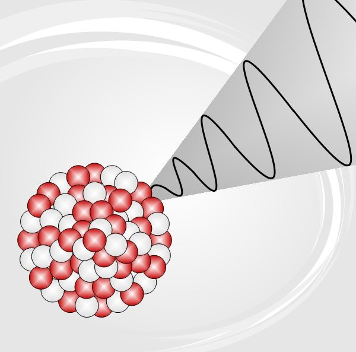
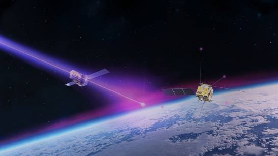

Los rayos gamma son ondas electromagnéticas de muy alta energía y longitud de onda extremadamente corta. Se producen principalmente en procesos nucleares y cósmicos, y son invisibles al ojo humano.
Son altamente penetrantes y pueden atravesar materiales densos, por lo que requieren blindajes especiales (plomo, hormigón) para proteger a seres humanos.
| Propiedad | Descripción |
| Longitud de onda | Menor a 0.01 nanómetros |
| Energía | De 100 keV a varios MeV |
| Velocidad | La velocidad de la luz (c) |
| Poder de penetración | Alto, capaz de atravesar metales y concreto delgado |
La exposición directa a rayos gamma puede causar daños graves a la salud, incluyendo radiación interna y daño celular. Es esencial el uso de blindajes adecuados y protocolos de seguridad estrictos.
